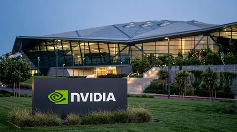
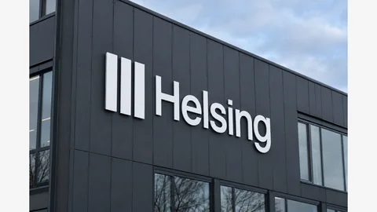
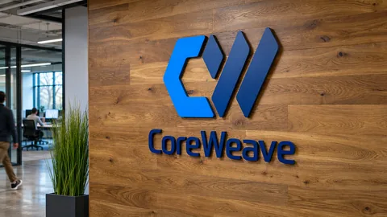
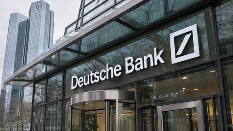

Financial news, market analysis and technology
Latest Story
Market Analysis View all →

Market Analysis
Dollar Holds Near 19-Month High as Fed Hike Bets Build Before 30-Year Treasury Auction
Futures price an 87% chance of a December rate increase while U.S. stocks rallied on a day the Treasury market was closed. The Treasury sells a new 30-year bond on Thursday.
Market Analysis
Wall Street Opens Higher as CoreWeave Results Lift AI Shares
A stronger open for the Nasdaq shows investors are willing to revisit AI infrastructure stocks, even as inflation and interest-rate risks remain.
Market Analysis
easyJet Shareholders Back Apollo’s £5.7 Billion Takeover
Shareholders have approved Apollo’s proposed buyout of easyJet, clearing a major hurdle for the £5.7 billion deal. Court and regulatory steps remain before it can close.

Market Analysis
Siemens Energy’s Record Year Shows How AI Data Centers Are Reshaping Power Demand
Siemens Energy's revenue rose 15.5% to €44.2 billion and its backlog hit €164 billion. Data centers are one demand driver, but its new targets remain forecasts.
Tech & AI View all →

Tech & AI
Nvidia Shares Fall After Hours on Reports Its Board Is Preparing to Remove CEO Jensen Huang
The reports, which Nvidia had not publicly addressed in the sources reviewed, come five days before the chipmaker's quarterly results. Analysts disagree on how much a leadership change would affect AI demand.

Tech & AI
Helsing Unveils Military AI Platform, Entering a Market Led by Palantir
Helsing says its Clarity platform combines information from sensors and reports for military users. The company has not disclosed whether customers are already using it.

Tech & AI
Nvidia H200 Purchases in China Expose Gaps in U.S. Export Controls
Reuters records show a U.S.-blacklisted Chinese university bought two Nvidia H200 chips through a local supplier, renewing questions over controls and cloud access.

Tech & AI
CoreWeave Raises 2026 Outlook as AI Demand Pushes Spending Higher
CoreWeave lifted its 2026 revenue outlook after third-quarter sales more than doubled, while higher capital spending and interest costs keep funding in focus.
Crypto View all →

Crypto
MSCI to Remove Strategy From Its Indexes at the Close of November 30
The index provider's new rule for non-operating companies removes the largest corporate bitcoin holder from three major benchmarks. Estimates of passive selling are dated and depend on which other index providers follow.
Crypto
Global Watchdog Urges Turkey to Close Stablecoin Regulatory Gap
A new FSB review credits progress on crypto oversight but warns that rules for stablecoin issuers remain incomplete.

Crypto
Deutsche Bank’s Crypto Custody Service Goes Live for Paying Clients
Deutsche Bank says its digital asset custody service is live for paying clients. The launch moves a planned institutional service into operation, though the bank has not disclosed its scale.

Crypto
Visa Adds Monad to Stablecoin Settlement as Payment Network Expands
Participating banks can use another blockchain for back-end payments, but Visa has not disclosed a Monad settlement customer or volume.
News Feed